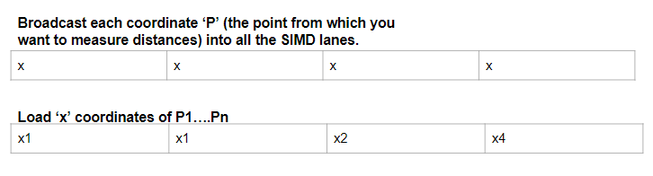

Given a set of data points, computing the distance between each point and all the other points in the dataset is helpful in determining points that are close to each other. In such a case we store the distances between every point and all the other points in a Matrix. Such a Matrix be of size nxn where n is the total number of points. The ith row and the jth column of the distance Matrix denoted as M[i][j] will contain the distance between the ith point and the jth point. The code written below in C++ takes a dataset as an input parameter. The dataset is a Matrix where each point's coordinates or the dimensions are stored in a row. The size of each row is equal to the dimension of the dataset. Since the distance computation matrix is symmetric, you will only need only n^2/2 number of operations to compute the matrix.
A C++ snippet to compute the distance is given below.
template<typename T>
std::vector<std::vector<T>> computeDistanceActual(std::vector<std::vector<T>>& dataset) {
const uint64_t num_of_points = dataset.size();
const uint64_t num_of_features = dataset[0].size();
std::vector> distance_matrix(num_of_points, std::vector(num_of_points));
for(uint64_t i = 0; i < num_of_points; i++) {
for(uint64_t j = i+1; j < num_of_points; j++) {
for(uint64_t k = 0; k < num_of_features; k++) {
T diff = dataset[i][k] - dataset[j][k];
distance_matrix[i][j] += diff * diff;
}
distance_matrix[j][i] = distance_matrix[i][j]; //dist(i,j) = dist(j,i)
}
}
return distance_matrix;
}
a.) You can use assembly code and directly use the SIMD instructions supported by your processor
b.) You can use intrinsics that you can use in a high level programming language like C/C++. These are basically C type functions that will call the SIMD instruction without having to resort to the cumbersome task of writing assembly code.
There is also another way to use SIMD instructions which is the easiest way. Simply let the compiler to do it for you. However, that depends on how smart the compiler is automatically vectorize (figure out how to use SIMD instructions) in your code. Now, let us explore how one can use SIMD code on a Intel CPU. SIMD instructions on x86 machines (Intel and AMD) are popularly known as AVX (Advanced vector instructions). We will rewite the distance computation the AVX intrinsics provided by Intel for running our code on x86 machines (AMD/Intel).
std::vector<std::vector<float>> computeDistance(std::vector<std::vector<float>>& dataset) {
const int64_t num_of_points = dataset.size();
const int64_t num_of_features = dataset[0].size();
std::vector> distance_matrix(num_of_points, std::vector(num_of_points));
for(int64_t i = 0; i < num_of_points; i++) {
for(int64_t j = i+1; j < num_of_points; j++) {
__m256 sum_vec = _mm256_setzero_ps(); //Initialize sum_vec to 0.0f
int64_t k = 0;
for(; k < (num_of_features-8); k =k + 8) {
__m256 coordinate_dataset1 = _mm256_loadu_ps(&dataset[i][k]); /*Load a maximum of 8 floats from ith row. */
__m256 coordinate_dataset2 = _mm256_loadu_ps(&dataset[j][k]); /*Load a maximum of 8 floats from jth row. */
__m256 diff = _mm256_sub_ps(coordinate_dataset1, coordinate_dataset2); /*SIMD subtraction of 8 floats from ith row and 8 floats from jth row. */
__m256 sq_diff = _mm256_mul_ps(diff, diff); /*SIMD multiplication */
sum_vec = _mm256_add_ps(sum_vec, sq_diff); /*Add the contents of sq_diff and sum_vec */
}
float temp[8];
_mm256_storeu_ps(temp, sum_vec); /*Store the contents of sum_vec in temp array */
float distance = temp[0] + temp[1] + temp[2] + temp[3] + temp[4] + temp[5] + temp[6] + temp[7]; /*add the contents of temp array into a variable. (x1-x2)^2 + (y1-y2^2/
// Store the result in the distance matrix
/*For those elements that are leftover => dataset[i][k-8] to dataset[i][num_of_features]*/
for (; k < num_of_features; k++) {
float diff = dataset[i][k] - dataset[j][k];
distance += diff * diff;
}
distance_matrix[i][j] = distance;
distance_matrix[j][i] = distance;
}
}
return distance_matrix;
}
Note that the data type __m256 defines a vector length of 256 bits and will hold data of type single precision float which essentially means you can store or pack 8 single precison floats into the register. In order to store double
precision floats, we will have to use __m256d and this in turn essentially means you can store 4 double precision floats in the 256 bit register. _mm256_setzero_ps sets a 256 vector to hold 8 single precison values, each equal to 0.0f.
_mm256_loadu_ps(float* addr) will load a maximum of 8 floating point values starting from address location addr. Note that the 'u' in
_mm256_loadu_ps refers to unalligned memory address. In the case of loading values from alligned memory address i.e addresses are aligned on a 32 bit boundary, then you
can use _mm256_load_ps. Remember using _mm256_load_ps for values that are not alligned will lead to a crash or unexpected behavior.
_mm256_sub_ps, _mm256_mul_ps and _mm256_add_ps are SIMD operations that are used to subtract, multiply and add respectively.
Similar to the load operation, we have _mm256_storeu_ps(float* array, _mm256 reg ) that will store values from the register into array.
Remember, similar to the load SIMD operation, we have the alligned and unalligned store operation as well.
Also, remember while using _mm256_loadu_ps to load values from an array into a vector, the array must contain at least 8 single precision floats failing which
_mm256_loadu_ps will try load values beyond the last element in the array. Hence we run our vectorized loop only from 0 till num_of_features-8.
Of course, if you are using a 128 bit vector to load floats, you can use num_of_features-4.
Finally, once you do not enough values to load onto a SIMD register, you can use simply use scalar operations to take care of the remaining elements.
On my 12th Generation i5 laptop running at 2.1GHz with 16GB RAM, I ran both the vectorized and the non vectorized code for a dataset of size 20000 with the number of features being equal to 16.
Time taken by vectorized function: 3790 milliseconds
Time taken by reference function: 4510 milliseconds
Of course the numbers will vary from system to system and is dependent on a number of factors such as the clock frequency, number of cores, cache memroy and the other applications running on the system etc.
But how can we exploit the SIMD capabilites of a processor if the number of features of the dataset is lesser than the size of the vector register?
The simple trick in such a case is to load each feature into a seperate SIMD register.
For example, imagine our dataset has three features, (x,y,z)
Point 1 - (x1, y1, z1)
Point 2 - (x2, y2, z2)
and so on...
We can load all the x dimension values into a SIMD register, the y dimension values into another SIMD register and finally, the z dimension
values into the third SIMD register.
The problem with such an approach is that the x,y and z coordinates are not stored as contigous locations in the memory.
For example the x dimension values are stores in dataset[0][0], dataset[1][0], dataset[2][0] etc.
Let us for now imagine that each of the x,y and z coordinates are stored in contigous locations in the memory. This is also called as the column major order.

In order to compute the distance from point 'P' to all other points 'P1','P2','P3', we go dimension by dimension for each point. We first broadcast the first dimension of point 'P' into a SIMD register and then subsequently load the first dimensions of 'n' number of points into another SIMD register where 'n' is the size of the SIMD register. Once we have the SIMD operations to compute the Euclidean distances completed, we will have the distances from point 'P' to 'n' other points in the SIMD register that stores the result of the SIMD computations. Hence we compute 'n' distances at a time instead of only point at a time like in the previous approach. The C++ code to compute the distances for a column major dataset is given below.
std::vector<std::vector<float>> computeDistanceColumnMajor(std::vector<std::vector<float>>& dataset) {
const int64_t num_of_points = dataset[0].size();
const int64_t num_of_features = dataset.size();
std::vector> distance_matrix(num_of_points, std::vector(num_of_points));
for(int64_t i = 0; i < num_of_points; i++) {
int64_t j = 0;
for(; j < (num_of_points-8); j = j + 8) {
__m256 sum_vec = _mm256_setzero_ps();
for(int64_t k = 0; k < num_of_features; k++) {
__m256 coordinate_i = _mm256_set1_ps(dataset[k][i]); /*Broadcast the kth dimension of point 'i' */
__m256 coordinates_j = _mm256_loadu_ps(&dataset[k][j]);
__m256 diff = _mm256_sub_ps(coordinate_i, coordinates_j);
__m256 sq_diff = _mm256_mul_ps(diff, diff);
sum_vec = _mm256_add_ps(sum_vec, sq_diff);
}
/*Store distances from i to upto 8 points */
_mm256_storeu_ps(&distance_matrix[i][j], sum_vec);
}
//Compute distances for left over points
for (; j < num_of_points; j++) {
float distance = 0.0f;
for(int64_t k = 0; k < num_of_features; k++) {
float diff = dataset[k][i] - dataset[k][j];
distance += diff * diff;
}
distance_matrix[i][j] = distance;
}
}
return distance_matrix;
}
_mm256_set1_ps(float value)
Let us benchmark the non vectorized implementation and both the vectorized implementations (column major and row major) and evaluate the performance gains. For the benchmark, I use a dataset of 20000 points with 9 features. In the row major vectorization strategy, there would be just 9 values that could be vectorized in a given iteration which means I could load 8 single precision floats in one iteration and then the remaining dimension will be computed in the for loop that takes care of the rest of the elements. However, in the case of the column major dataset, we have a total of 20000 values that could be vectorized, 8 at a time. Let us see what the benchmark numbers say.
| Non vectorized function | 3315 ms |
|---|---|
| Row major vectorization | 3525 ms |
| Column major vectorization | 1656 ms |